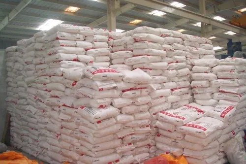

Shettima announces presidential directive on immediate fertiliser supply for dry season farming

Vice President Kashim Shettima has directed government agencies and fertiliser industry stakeholders to accelerate production and distribution of more than three million bags of fertiliser ahead of the coming dry-season farming period. The directive followed President Bola Tinubu’s approval of funding under the Renewed Hope Agricultural Stabilisation and Productivity Initiative, which is intended to make fertiliser more affordable and support domestic production. Shettima gave the instruction at a meeting with industry stakeholders at the Presidential Villa in Abuja.
He directed the Office of the National Security Adviser to verify and monitor stocks declared by stakeholders, with the stated aim of ensuring transparent accounting and an orderly distribution process. He also called for farmers in states facing security challenges, including those in vulnerable or hard-to-reach communities, to be included. Under the initiative, the federal government plans to buy fertiliser made by Nigerian blending companies and make it available to farmers at affordable prices.
The Fertiliser Producers and Suppliers Association of Nigeria said available raw materials could support production of about 148,000 metric tonnes of NPK 20-10-10 fertiliser in the coming weeks, equivalent to roughly three million bags. FEPSAN president Abubakar Kassim also said members held about 29,000 metric tonnes of finished NPK fertiliser that could be purchased and released immediately. He estimated the industry could make about 3.5 million bags available within the implementation period. The association said existing blending plants, warehouses and distribution networks were operating below capacity, despite demand for affordable farm inputs.
Budget and Economic Planning Minister Abubakar Bagudu said stakeholders had identified about 496,000 metric tonnes of fertiliser-related stocks as a starting point for the programme. A Ministry of Finance Incorporated representative separately reported about 90,000 metric tonnes of materials on the ground, with goods in transit bringing the combined amount to about 248,000 metric tonnes. The Bank of Agriculture and Bank of Industry have been approved as fund administrators and financial intermediaries. Shettima said restoring activity across the fertiliser value chain could support jobs and rural livelihoods, while the government said it would seek funding through other programmes to sustain the intervention.
Source: Premium Times